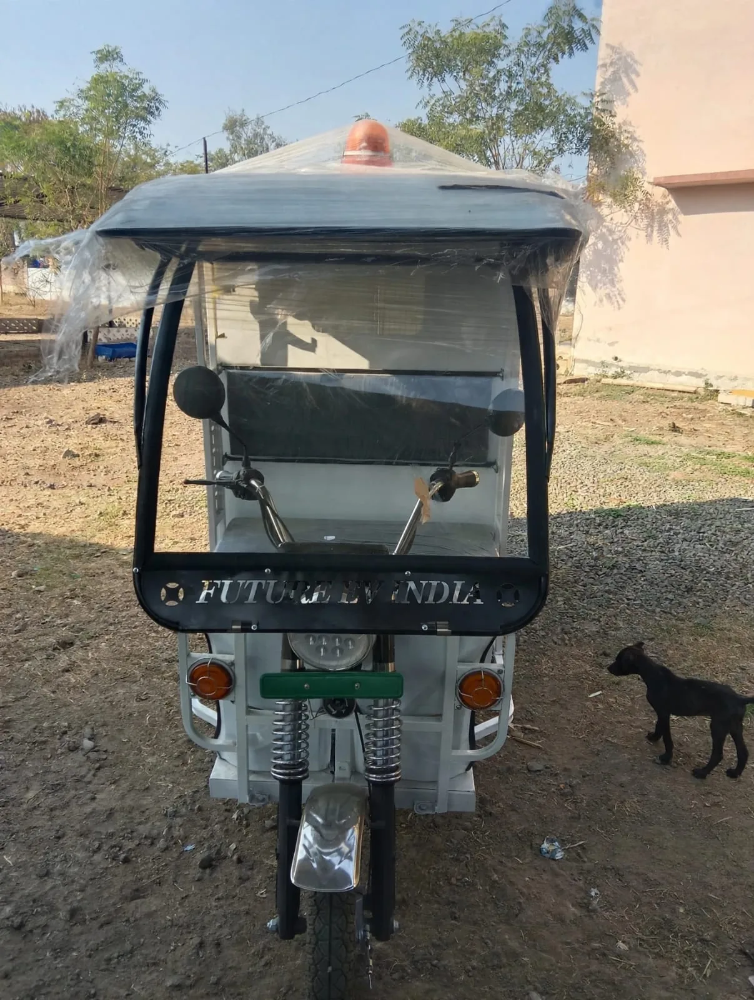
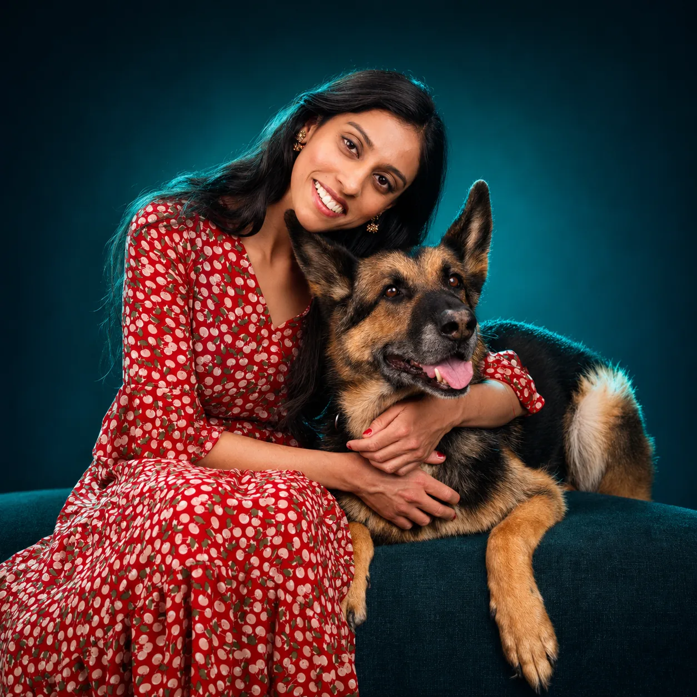
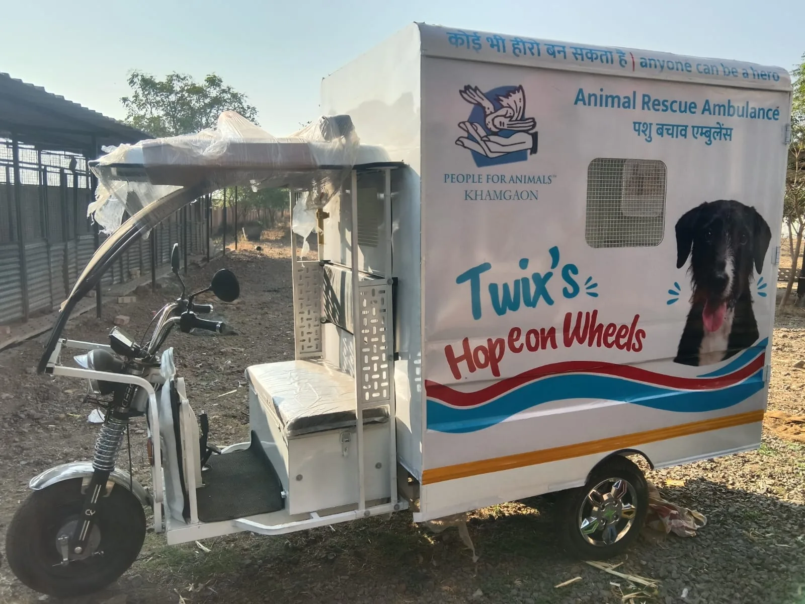

Archana Ramamoorthy
TREASURER
Guiding the charity’s resources towards the dogs and communities who need them.
WITH GRATITUDE
For every life that deserves
a way to safety.
TWIX’S HOPE ON WHEELS



01 / THE GIFT
25 NOVEMBER 2026
Rosie’s Heroes gave PFA Khamgaon an electric ambulance to bring injured and sick street animals to treatment. Its name is Twix’s Hope on Wheels.
02 / THE FOUNDER
Priyanka founded Rosie’s Heroes with a promise: to give dogs like Rosie the safety and care they deserve.
Priyanka Rao
FOUNDER & PRESIDENT · ROSIE’S HEROES

PRIYANKA RAO & HERO
From one dog’s story to a community of people making a difference.
03 / THE PEOPLE BEHIND ROSIE’S HEROES
A volunteer-led team, united by a better future for street dogs.
TREASURER
Guiding the charity’s resources towards the dogs and communities who need them.
SECRETARY
Helping the team stay organised, follow through and turn care into action.
VOLUNTEER · EVENTS
Bringing people together through events that inspire support for dogs.
VOLUNTEER · WEBSITE
Supporting shelter dogs in person and the mission through the charity’s website.
VOLUNTEER · WEBSITE
Connecting hands-on care with a website that brings more people into the mission.

To Rosie’s Heroes and everyone who made this possible
With gratitude,
People for Animals.